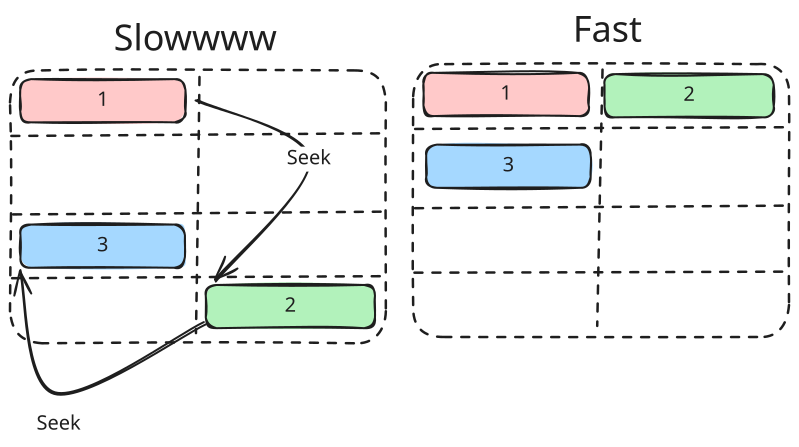
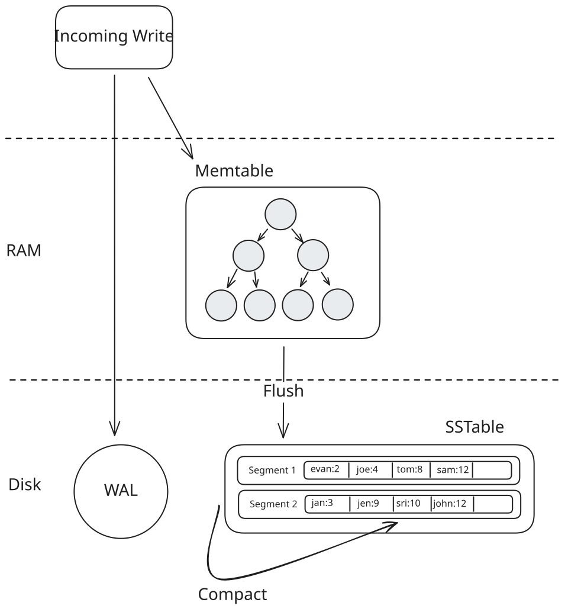

Advanced Topics
Time Series Databases
Learn the concepts behind time-series databases like LSM trees, append-only storage, and delta encoding.
In this deep dive we're going to cover the patterns that enable high-throughput time-series databases. While the ideas in totality make time-series databases really hum, each of the ideas here has wider applicability to distributed systems, especially for infra-style system design interviews. And what we hope to demonstrate is that none of these ideas are terribly complex: they're simple ideas and the magic is in how you put them together.
Before we dive in, a worthwhile caveat about time series databases in general: just because you have time series data doesn't mean you need a time-series database! The Top-K problem breakdown is a classic example where it seems like a TSDB would be helpful but can actually make the problem harder because we need to sort and aggregate across a huge number of series — something that most TSDBs aren't designed for.
Be careful about reaching for a time-series database when a general-purpose database like Postgres or DynamoDB would be a better fit. I'd advise you to stretch general-purpose solutions to fit your needs and only when you encounter a true bottleneck that can't be solved with another solution you should reach for specialized tech like a time-series database. Understanding their limits (in this guide) will help you understand when they apply!
Let's dive in to how time series databases work.
A Motivating Example
Imagine you're designing a monitoring system for a cloud provider. You've got 100,000 servers, each emitting 5 metrics every 10 seconds: CPU usage, memory, disk I/O, network traffic. That's 50,000 metrics per second, or 4.3 billion data points per day. And users want to query this data to see dashboards, set up alerts, and debug issues from the past week.
Let's try to store this in vanilla Postgres:
CREATE TABLE metrics (
timestamp TIMESTAMP,
host VARCHAR(255),
metric_name VARCHAR(255),
value DOUBLE PRECISION
);With 4.3 billion rows per day, you're looking at ~30 billion rows per week. Even with indexes, simple queries like "show me the average CPU usage for host-42 over the past hour" become painfully slow and the write performance degrades as we add more indexes. Worse, the write throughput needed (50,000 writes/second minimum, with bursts much higher) will crush a single Postgres instance. Storage is also wildly inefficient: each row stores the full host name and metric name repeatedly, ballooning to 50-100 bytes per data point when the actual information (a timestamp and a float) is only 16 bytes.
We can do a lot better.
Time-series databases like InfluxDB, TimescaleDB, and Prometheus are built specifically for this workload. So how do they work?
The Building Blocks
Let's talk about all of the pieces that make a time series database hum. Time series databases typically involve so much data that disk-based storage is the only viable option. So let's start with what we'll need there.
Append-Only Storage
The first insight is deceptively simple: if you're writing a lot of data, don't update data in place. Instead, always append new data to the end of a file.
Why does this matter? Consider how traditional databases handle writes. When you update a row, the database needs to:
- Find the row's location on disk
- Read the current data
- Modify it in memory
- Write the updated data back
This involves random I/O which is the most frequent cause of performance problems. With spinning disks, the disk head has to seek to a specific location. This is a physical arm moving on the drive and while hard disks are optimized for this, they still only operate at 100-200 operations per second. Even SSDs, while much faster at random operations, still perform significantly better with sequential access patterns due to their architecture.
Append-only storage flips this around. Every new data point gets written to the end of the current file. No seeking, no reading-before-writing - just sequential writes. SSDs can handle hundreds of thousands of sequential writes per second, and even spinning disks can manage tens of thousands.
Traditional DB write:
[Seek to block 4752] → [Read] → [Modify] → [Write] → [Seek to block 9201] → ...Append-only write:
[Write to end] → [Write to end] → [Write to end] → ...
Random vs. Sequential I/O
But wait - if we only append, how do organize the data for reading? This is where the next piece comes in.
LSM Trees (Log-Structured Merge Trees)
LSM trees are the secret sauce behind many high-write-throughput databases, including InfluxDB, Cassandra, and LevelDB. You may recall this idea from our Cassandra deep dive or DB Indexing core concept - the core idea is to transform expensive random writes into cheap sequential writes, then periodically reorganize the data in the background to make reads more efficient.
Here's how it works:
Step 1: Write to Memory (like a Memtable)
When data arrives, it goes into an in-memory buffer like a memtable. The memtable is typically implemented as a sorted data structure (like a red-black tree or skip list), so data remains ordered by key. Writes are blazingly fast since they only touch RAM.
Why keep it sorted? Because when we flush to disk, we want the resulting file to be sorted too. Sorted files let us use binary search for point lookups, make range queries efficient (adjacent keys are stored together), and - critically - allow us to merge multiple files efficiently using merge sort during compaction.
Step 2: Flush to Disk (like SSTable)
When the memtable gets full, it's written to disk as an immutable sorted file called an SSTable (Sorted String Table). Since the memtable was already sorted, this flush is just a sequential write from start to end - very fast. The memtable is then cleared for new data.
Step 3: Background Compaction
Over time, you accumulate many SSTables. Reading becomes expensive because you might need to check multiple files. Compaction runs in the background, merging smaller SSTables into larger ones, removing duplicates and tombstones (deleted data markers).

LSM Model
The beauty of this approach is that writes never block on reads. The memtable handles new data while background threads organize older data. This separation is what enables LSM-based databases to handle sustained high write throughput.
LSM trees aren't free. Read performance can suffer because you might need to check multiple SSTables to find a value. There's also write amplification - data gets rewritten multiple times during compaction. So reach for LSM trees when you have a high-write workload and you're willing to trade some read performance for write performance.
Ok with append-only storage and LSM trees, we're starting to look like Cassandra. Let's add a few more pieces to the puzzle.
Delta Encoding and Compression
Time-series data has a unique property: adjacent values are often similar. If you're recording CPU usage every second, the values might be 45.2%, 45.3%, 45.1%, 45.4%. Storing the full value each time wastes space.
Delta encoding stores the difference between consecutive values instead of the absolute values:
Raw values: [45.2] [45.3] [45.1] [45.4]
Delta encoded: [45.2] [+0.1] [-0.2] [+0.3]The deltas are much smaller numbers, requiring fewer bits to store.
But wait - don't integers and floats always take 32 or 64 bits? Not if you use variable-length encoding. Techniques like varint (variable-length integer) encode small numbers with fewer bytes: the number 1 might take just 1 byte, while 1,000,000 takes 3 bytes. When your deltas are tiny (like +1 or -2), you're storing 1-2 bytes instead of 8. This is why converting large absolute values into small deltas pays off so dramatically.
Time-series databases go even further with specialized compression algorithms.
Timestamps use delta-of-delta encoding. Timestamps in time-series data are often regular - every 10 seconds, for example. The delta between timestamps might be constant or nearly constant:
Raw timestamps: 1000, 1010, 1020, 1030, 1040
Deltas: 10 , 10 , 10 , 10 , 10 , ...
Delta-of-deltas: 10 , 0 , 0 , 0 , 0 , ...When timestamps are perfectly regular, you can encode millions of them with essentially zero overhead. Facebook's Gorilla paper showed this technique can compress timestamps to as low as 1 bit per value on average.
Float values use XOR-based compression. When you XOR two similar floating-point numbers, most bits are zero. You can then run-length encode those zeros:
Value 1: 0 10000010 01101000101000111101011
Value 2: 0 10000010 01101000110000100000000
XOR: 0 00000000 00000000011000011101011
^^^^^^^^^^ lots of leading zerosBy storing only the position of the first differing bit and the meaningful bits after it, you compress each value significantly. In practice, this achieves 1.37 bytes per value on average for typical time-series data - a massive improvement over the 8 bytes needed for a raw double.
Most interviews aren't going to get into this level of detail, so don't try to memorize "1.37 bytes per value". The core idea is that we can achieve strong compression on data at rest that has a lot of redundancy in it — and time series data is a great example of this.
Time-Based Partitioning (Sharding by Time)
Another key concept is organizing data by time. Time-series databases group data into partitions based on time windows - for example, one partition per day or per week. These partitions don't necessarily live on different machines, but they absolutely can if necessary for scaling.
Why is this so powerful?
Writes are localized. All incoming data goes to the current time partition. There's no need to figure out which of many partitions should receive the data - it's always the "now" partition.
Reads are efficient. When you query "show me the last hour of data," the database knows exactly which partitions to examine. It doesn't need to scan data from last month.
Retention becomes trivial. Want to keep only 7 days of data? Just delete partitions older than 7 days. No expensive DELETE queries scanning through a massive table - just drop the old files.
┌─────────────────────────────────────────────────────────┐
│ Query: "Last 2 hours of CPU data for host-42" │
└─────────────────────────────────────────────────────────┘
│
▼
┌─────────┐ ┌─────────┐ ┌─────────┐ ┌─────────┐ ┌─────────┐
│ Nov 22 │ │ Nov 23 │ │ Nov 24 │ │ Nov 25 │ │ Nov 26 │
│ skip │ │ skip │ │ skip │ │ skip │ │ ← SCAN │
└─────────┘ └─────────┘ └─────────┘ └─────────┘ └─────────┘This time-partitioning strategy is nearly universal in time-series databases. You'll see it in TimescaleDB (which calls them "chunks"), in Prometheus, and in custom-built systems.
So far we've focused on write optimization. But what about reads?
Bloom Filters for Read Optimization
Remember how LSM trees work: data gets written to multiple SSTables over time. To find a value, you might need to check several of these files. Each check means a potential disk read. The worst case scenario is a long query which might cover many partitions but is only seeking a single value, or a small number of values (like gathering the time series for a single host over a long period of time).
Bloom filters (more on Bloom Filters in our Data Structures for Big Data deep dive) solve this elegantly.
A Bloom filter is a probabilistic data structure that can tell you "definitely not here" or "maybe here" with zero disk I/O. Each SSTable maintains a Bloom filter of all the keys it contains. When you query for a specific series, the database first checks the Bloom filter for each SSTable. If the filter says "not here," the database skips that file entirely with absolute certainty. False positives are possible (the filter says "maybe" but the key isn't there), but false negatives never happen.
Query: "Get data for host=server-42"
SSTable-1 Bloom filter: "not here" → skip (no disk read)
SSTable-2 Bloom filter: "not here" → skip (no disk read)
SSTable-3 Bloom filter: "maybe here" → check (disk read)
SSTable-4 Bloom filter: "not here" → skip (no disk read)In practice, a well-tuned Bloom filter uses about 10 bits per key and achieves a 1% false positive rate. For a database with millions of series spread across dozens of SSTables, this turns what could be dozens of disk reads into just one or two.
Downsampling and Rollups
Bloom filters help with point lookups, but what about aggregate queries over large time ranges? Raw metrics at 10-second resolution are great for debugging recent issues, but nobody needs that granularity when looking at last year's data. Downsampling automatically reduces the resolution of older data, trading precision for storage efficiency.
A typical policy might look like:
- Last 24 hours: Full resolution (10-second intervals)
- Last 7 days: 1-minute averages
- Last 30 days: 5-minute averages
- Last year: 1-hour averages
The database computes these rollups in the background, storing pre-aggregated values (typically min, max, sum, count) that can answer most queries without touching the raw data. When you ask "what was the average CPU usage last month?", the database reads from the 5-minute rollup table - 288x less data than the raw 10-second data.
Raw data (10s): [45.2] [45.3] [45.1] [45.4] [45.0] [45.5] ... (8,640 points/day)
1-min rollup: [min:45.0, max:45.5, avg:45.25, count:6] ... (1,440 points/day)
1-hour rollup: [min:44.1, max:47.2, avg:45.8, count:360] ... (24 points/day)This is a form of pre-computation that trades storage and write amplification for dramatically faster reads on historical data. If you want to see downsampling in action in a problem context, check out our Ad Click Aggregator breakdown where we use this technique to handle billions of ad events.
Downsampling and rollups frequently show up in interviews as a negotiation in requirements. Your interviewer says "we need to store 10s samples for 1 year", and you say "that's a ton of data, I think we probably only need the fine resolution for a week, and can downsample to 5 minute averages for a month ... does this work?" The key is (a) you anticipating a future problem, (b) explaining the challenge, and (c) offering an alternative. Even if the interviewer says no, they're marking down your ability to think outside of the rigid requirements that were given to you — a hallmark of a staff+ candidate.
Block-Level Metadata
Our last optimization is a twist on the query planning ideas we covered in our Elasticsearch deep dive. When scanning data files, time-series databases maintain metadata about each block's contents - particularly min/max timestamps and sometimes min/max values. This enables block pruning during queries.
If a query asks for CPU usage above 10%, and a block's metadata shows it only contains data from 0-5%, the database skips that entire block without reading it. Combined with time-based partitioning (which already limits which partitions to check), this provides another layer of filtering that keeps queries fast even as data volumes grow.
Putting It Together: A Time-Series Storage Engine
Now that we understand the building blocks, let's see how they combine in a typical time-series database architecture.
The Data Model
Time-series databases typically organize data into:
- Measurements or metrics - like tables (e.g., "cpu_usage", "memory")
- Tags - indexed metadata for filtering (e.g., host="server-1", region="us-west")
- Fields - the actual measured values (e.g., value=45.2)
- Timestamps - when the measurement was taken
A data point might look like this:
cpu_usage,host=server-1,region=us-west value=45.2 1699999200000000000
└─────────────────────────────────────┘ └────────┘ └─────────────────┘
measurement + tags field timestampTags are crucial because they're indexed. Queries filtering by tags are fast. Fields are not indexed - they're the actual time-series data you're storing.
The distinction between tags and fields trips people up. Use tags for metadata you'll filter by (host, region, service). Use fields for the actual values you're measuring. Getting this wrong leads to either poor query performance or the cardinality explosion problem we'll discuss later.
The Storage Engine
A typical time-series storage engine combines the patterns we've discussed:
- Write Ahead Log (WAL): Data first goes to the WAL for durability. If the database crashes, it can recover uncommitted data from the WAL.
- In-Memory Buffer: Data is also written to an in-memory buffer, organized by measurement and tag combination. This is the memtable from our LSM discussion.
- Flush to Disk: When the buffer reaches a threshold, it's flushed to disk as an immutable file with compressed timestamps and values.
- Background Compaction: Smaller files are periodically merged into larger ones, reducing the number of files to check during queries and removing deleted data.
The file format is heavily optimized:
File Structure:
┌──────────────────────────────────────────────────────────────┐
│ Header │
├──────────────────────────────────────────────────────────────┤
│ Block 1: Timestamps (delta-of-delta + varint encoded) │
│ Block 1: Values (XOR compressed) │
├──────────────────────────────────────────────────────────────┤
│ Block 2: Timestamps │
│ Block 2: Values │
├──────────────────────────────────────────────────────────────┤
│ ... │
├──────────────────────────────────────────────────────────────┤
│ Index (series → block offsets) │
├──────────────────────────────────────────────────────────────┤
│ Footer │
└──────────────────────────────────────────────────────────────┘Each file contains an index at the end that maps series keys (measurement + tag combinations) to the blocks containing their data. This means looking up data for a specific series is a seek to the index, then a seek to the data - two disk operations regardless of how much data is in the file.
Query Execution
When you query a time-series database:
SELECT mean(value) FROM cpu_usage
WHERE host = 'server-1'
AND time > now() - 1h
GROUP BY time(5m)The query engine:
-
Identifies relevant partitions based on the time filter. Only partitions overlapping the query time range are considered.
-
Locates series by looking up the tag filter (host='server-1') in the in-memory tag index.
-
Reads from buffer and disk files. The buffer has the most recent data; disk files have older data. Results are merged.
-
Applies aggregations as data is read. This is a streaming operation - the database doesn't need to load all data into memory before computing the mean.
The key insight is that time-series databases exploit both time locality (recent data is in memory or recent files) and series locality (related data points are stored together) to minimize disk access.
Worked Example: Multi-Tag Query
Let's trace through a complete example to see how data flows from ingestion to query results.
Step 1: Data Ingestion
Imagine our monitoring system writes these data points over a few seconds:
cpu_usage,host=server-1,region=us-west,env=prod value=45.2 1700000000000000000
cpu_usage,host=server-1,region=us-west,env=prod value=47.1 1700000010000000000
cpu_usage,host=server-2,region=us-west,env=prod value=62.3 1700000000000000000
cpu_usage,host=server-2,region=us-west,env=prod value=61.8 1700000010000000000
cpu_usage,host=server-3,region=us-east,env=prod value=38.9 1700000000000000000
cpu_usage,host=server-3,region=us-east,env=prod value=39.2 1700000010000000000
cpu_usage,host=server-4,region=us-east,env=staging value=71.0 1700000000000000000
cpu_usage,host=server-4,region=us-east,env=staging value=73.5 1700000010000000000Step 2: How Data Is Organized
Each unique combination of measurement + tags creates a "series." Our data has 4 series:
Series 1: cpu_usage,host=server-1,region=us-west,env=prod
Series 2: cpu_usage,host=server-2,region=us-west,env=prod
Series 3: cpu_usage,host=server-3,region=us-east,env=prod
Series 4: cpu_usage,host=server-4,region=us-east,env=stagingIn the data file, data for each series is stored together in compressed blocks. Here's what it looks like on disk, with all our compression tricks applied:
┌─────────────────────────────────────────────────────────────────────────┐
│ Data File (partition for Nov 15, 2023) │
├─────────────────────────────────────────────────────────────────────────┤
│ Block 0: Series 1 (server-1, us-west, prod) │
│ │
│ Raw timestamps: [1700000000000000000, 1700000010000000000] (16 bytes)
│ Stored as: base=1700000000, delta=10, Δ-of-Δ=[0] (3 bytes)
│ │
│ Raw values: [45.2, 47.1] (16 bytes)
│ Stored as: [45.2, XOR-diff] (10 bytes)
│ │
├─────────────────────────────────────────────────────────────────────────┤
│ Block 1: Series 2 (server-2, us-west, prod) │
│ Raw: ts=[1700000000, 1700000010], vals=[62.3, 61.8] (32 bytes)
│ Stored: ts=base+Δ+[0], vals=[62.3, XOR-diff] (13 bytes)
├─────────────────────────────────────────────────────────────────────────┤
│ Block 2: Series 3 (server-3, us-east, prod) │
│ Raw: ts=[1700000000, 1700000010], vals=[38.9, 39.2] (32 bytes)
│ Stored: ts=base+Δ+[0], vals=[38.9, XOR-diff] (13 bytes)
├─────────────────────────────────────────────────────────────────────────┤
│ Block 3: Series 4 (server-4, us-east, staging) │
│ Raw: ts=[1700000000, 1700000010], vals=[71.0, 73.5] (32 bytes)
│ Stored: ts=base+Δ+[0], vals=[71.0, XOR-diff] (13 bytes)
├─────────────────────────────────────────────────────────────────────────┤
│ INDEX │
│ "cpu_usage,host=server-1,region=us-west,env=prod" → Block 0 │
│ "cpu_usage,host=server-2,region=us-west,env=prod" → Block 1 │
│ "cpu_usage,host=server-3,region=us-east,env=prod" → Block 2 │
│ "cpu_usage,host=server-4,region=us-east,env=staging" → Block 3 │
└─────────────────────────────────────────────────────────────────────────┘Block 0 shows the full breakdown; the other blocks use a compact notation. Notice how each block stores ~13 bytes instead of 32 bytes - a 60% reduction just from these two techniques and this only becomes more significant as the data volume grows.
The database also maintains an in-memory tag index that maps tag values to series. If this looks familiar, it's essentially an inverted index - the same data structure that powers Elasticsearch. Instead of mapping words to documents, we're mapping tag values to series.
Tag Index (in memory):
┌─────────────────────────────────────────────────────────────────────────┐
│ region=us-west → [Series 1, Series 2] │
│ region=us-east → [Series 3, Series 4] │
│ env=prod → [Series 1, Series 2, Series 3] │
│ env=staging → [Series 4] │
│ host=server-1 → [Series 1] │
│ host=server-2 → [Series 2] │
│ host=server-3 → [Series 3] │
│ host=server-4 → [Series 4] │
└─────────────────────────────────────────────────────────────────────────┘Step 3: Executing a Multi-Tag Query
Now let's query: "What's the average CPU usage for production servers in us-west?"
SELECT mean(value) FROM cpu_usage
WHERE region = 'us-west' AND env = 'prod'
AND time >= 1700000000000000000 AND time <= 1700000010000000000Here's how the database processes this:
Query: region='us-west' AND env='prod'
Step 1: Consult the tag index
region=us-west → [Series 1, Series 2]
env=prod → [Series 1, Series 2, Series 3]
Step 2: Intersect the sets
[Series 1, Series 2] ∩ [Series 1, Series 2, Series 3]
= [Series 1, Series 2]
Step 3: Look up block locations in file index
Series 1 → Block 0
Series 2 → Block 1
Step 4: Read only blocks 0 and 1 from disk (skip blocks 2, 3!)
Block 0: timestamps [1700000000, 1700000010], values [45.2, 47.1]
Block 1: timestamps [1700000000, 1700000010], values [62.3, 61.8]
Step 5: Apply time filter (all points match in this case)
Step 6: Compute aggregation
mean([45.2, 47.1, 62.3, 61.8]) = 54.1What Made This Fast?
The tag index let us identify matching series without scanning any data. We read exactly 2 blocks from disk, skipping the 2 blocks for us-east servers entirely. The data within each block was already organized by series, so no sorting or filtering within blocks was needed.
Compare this to a naive approach in Postgres:
-- PostgreSQL equivalent
SELECT AVG(value) FROM metrics
WHERE region = 'us-west' AND env = 'prod'
AND timestamp BETWEEN '2023-11-15 00:00:00' AND '2023-11-15 00:00:10';Even with indexes on region and env, Postgres would need to:
- Use the indexes to find matching row IDs
- Fetch each row from potentially scattered locations on disk
- Extract the value column from each row
- Compute the average
With millions of rows, those scattered disk reads kill performance. The columnar, series-oriented storage in a time-series database means the data you need is physically co-located. Our writes are optimized to assist our reads!
Where Things Break
These advantages are not without their challenges. A particularly poignant example is the cardinality problem.
Cardinality refers to the number of unique tag combinations. If you have 1,000 hosts and 50 metric names, that's 50,000 series. Manageable. But what if you add a tag for user_id with 10 million unique users? Suddenly you have 500 billion potential series.
Why is this a problem? Time-series databases maintain an in-memory index of all series. Each unique tag combination needs an entry. With billions of series, you run out of memory. Queries also slow down because the index becomes massive.
This is why user IDs, request IDs, or any high-cardinality value can only be stored as fields, not tags. In essence, we can write them but we lose all the performance benefits of the time-series database in reading them.
Summary
The cardinality problem puts a fine point on the lesson of time-series databases: if we can make some strong assumptions about our data (low-cardinality tags, highly regular data, low deltas between points), we can build a system which exploits each of these properties to achieve a massive improvement in performance. But as soon as our assumptions are violated, we lose all of the benefits and our system becomes worse than a general-purpose database for the task.
This is where most candidates will stumble. By not understanding the data assumptions of a database, they'll wander in to propose a solution which actually performs worse (or not at all) for a task they're asked to solve. Understanding these data assumptions and trademarks in the hallmarks of a staff+ candidate. If you find yourself uncertain, falling back to what you know rather than winging it with a technology you don't is the better strategy.
To summarize what we've covered, time series databases exploit a number of fundamental patterns to achieve their performance benefits, and these patterns are not exclusive to time series problems:
- Append-only storage turns random I/O into sequential I/O
- LSM trees enable high write throughput by deferring organization to background compaction
- Delta encoding and specialized compression exploit the structure of time-series data
- Time-based partitioning localizes writes and makes retention trivial
- Bloom filters eliminate unnecessary disk reads when checking SSTables
- Downsampling and rollups trade precision for storage efficiency on historical data
- Block-level metadata enables pruning during queries
In doing so, we achieve some practical performance benefits that order 10-100x better than a general-purpose database for their target workload.
So the next time you see a system handling millions of events per second, you'll know it's not magic. It's append-only logs, LSM trees, clever compression, Bloom filters, rollups, and careful data modeling.
Test Your Knowledge
Answer the question below to find your gaps.
Question 1 of 15
What happens during the compaction phase of an LSM tree?
1
Data blocks are compressed using delta encoding techniques
2
The memtable is flushed to disk as a sorted SSTable file
3
Smaller SSTables are merged, removing duplicates and tombstones
4
The write-ahead log is truncated after writes are confirmed